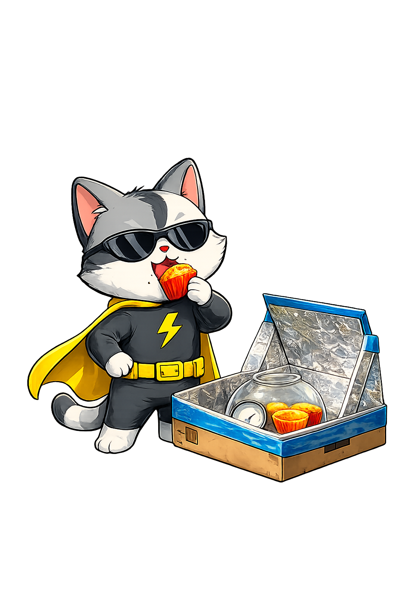

01
Make one reflector flap
Remove three box flaps so one long flap stays attached. Tape extra cardboard to it if you want a bigger reflector.

Turn a cardboard box into a mini oven that uses sunlight to warm and melt simple treats.

Before You Start
Build It
Remove three box flaps so one long flap stays attached. Tape extra cardboard to it if you want a bigger reflector.
Glue aluminium foil inside the box and on the reflector flap, then tape the foil edges down so they stay smooth.

Cut two cardboard strips from spare flap pieces and tape them behind the reflector at an angle. They should fold in and out so you can tilt the shiny flap toward the sun.

Place black paper inside the box, put the thermometer and treat underneath an upturned glass bowl, then face the reflector toward full sun.

Place the oven outside in direct sunlight and adjust the reflector so light bounces into the box. Check the thermometer every 15 minutes, keep turning the reflector as the sun moves, and use an oven mitt or tea towel when lifting the hot glass bowl.

Try It For Real
Use the solar oven to melt a spoonful of chocolate melts in a silicone cupcake liner with chopped marshmallow, chopped nuts, and desiccated coconut.
Once everything melts together, carefully remove it with an oven mitt and refrigerate until set. The Craft Train found their Rocky Road Bites took over an hour, which shows the oven works by slow, steady solar heat.
Images are generated with the help of ChatGPT.